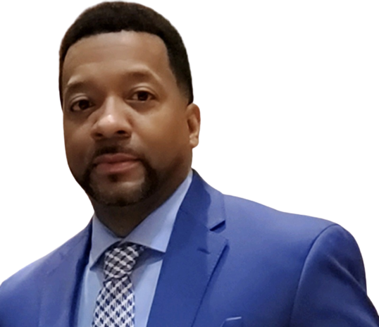

Choose To Think Differently. Active Positively. Find Opportunity In The Midst Of The Storm.
Books & Speaking Engagments
We Are Highly Proficient At Instructional Design and Learning Development, Program Management, Training Delivery, and Coaching.
Our Team
Jewel is an intelligent wordsmith and professed logophile. She is a profound storyteller with the masterful ability to take readers on a journey of well-researched information wrapped around relatable experiences that titillate the mind to embrace change, adjust perspective, and take decisive action.
She is a gifted author known for her ability to capture timely events and offer impactful solutions like those found in her 2020 work, Three Sides of Every Crisis: Strategies to Sustain Business, Manage Your Career and Take Care of You. The book addresses the global health and economic pandemic pushing readers to break free from perceived obstacles to capture new opportunities. Jewel has also written It Takes Tenacity, 15 Power Moves to Survive the Wilderness and Weather the Economic Storm, The Enterprising Entrepreneur, and an eBook Growing Solopreneur Businesses through Collaboration.
A progressive leader who possesses exceptional business acumen and the ability to anticipate Learning & Development needs within an organization, Jewel has moved the needle of success for industry giants, small business owners, and non-profit organizations. She is one of those rare individuals who possess a natural gift to develop people to move from achieving personal success to the greatness that serves others.
Jewel heads Daniels Communications, a global leadership development firm that serves clients in the Caribbean, Europe, and the United States. The Brooklyn-born tenacious entrepreneur is an engaging corporate trainer, author, and passionate speaker who has motivated several thousand conference and convention audiences.
She holds a master's degree in Organizational Leadership and studied International Relations and Political Science as one of the first African American at South Korea's Yonsei University. A proud Hampton University alumna with a BA in Communications and a graduate of New York University's Public Relations Institute, Jewel has also served as an Adjunct Instructor at Savannah Technical College and Armstrong Atlantic State University.
Jewel has been featured in various publications like Skirt magazine, Onyx Woman, Georgia Trend magazine, and The Savannah Morning News and has received recognition from former Georgia Gov. Roy Barnes and Congressman Jack Kingston.
Jewel is a member of Delta Sigma Theta Sorority, Incorporated, the Association for Talent Development and the Human Resources Association of Jamaica (HRMAJ). She is a Stephen Minister who loves to read, travel, and paint. She enjoys mentoring young women and believes that her greatest gift is her daughter Jynnah, a social anthropologist.

An educator, curriculum writer, and web developer with a background in mathematics, data analytics, and educational leadership.
Strong analytical reasoning and problem-solving skills, with a can-do attitude and openness to others' ideas. Highly self-motivated,
efficient with superb attention to details, and strong communication skills. I am a graduate of Hampton University with a bachelor’s degree in mathematics. I earned a master’s degree in
educational leadership from Seton Hall University. Prior to beginning my career in Full Stack Development, I
served as a Math Instructional Coach where I led a team of fifteen teachers providing professional development in technology
and instructional best practices. Additionally, I led weekly data analysis of school-wide math data to school leadership, facilitated
professional learning communities, and served as the secondary testing coordinator. Other responsibilities included coaching and mentoring teachers,
maintaining data dashboards, serving on the district curriculum writing team, and delivering district-wide professional development.My experience in education has given me the ability to analyze and deconstruct complex issues, operate and thrive in high-stress work
environments, and collaborate with stakeholders across teams.My journey to Full Stack Development began with my passion for data analytics, which inspired me to learn SQL, Tableau, and
Excel, and earn a certification in data analytics from General Assembly in Atlanta. The thrill of writing queries and
manipulating data deepened my eagerness for data analysis and coding, which led me to enroll and complete the Georgia Tech
Coding Boot Camp. When I'm not coding or attending a meetup, I love to fish, workout and travel. My favorite travel destination is
Los Cabos. I love the scenery, marine life, and riding ATVs along the beach. My dream vacation is a trip to Seychelles for marlin fishing.